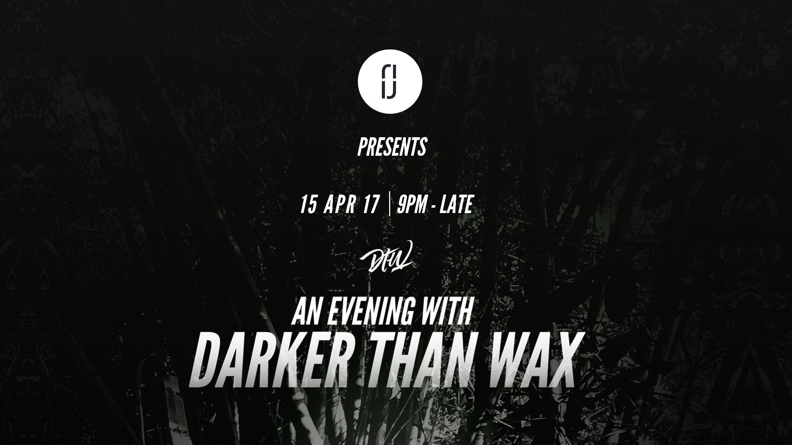

by Flow Theory
Posted on Tuesday 18th April, 2017 at 16:40 PM
In celebration of Joe's 24th birthday yesterday, we started celebrating on Thursday at The Sound of Tomorrow (The Crosby) with Astronautica & starRo! Thank you to everyone who came out and supported, what a show it was. This radio session is just a continuation of the celebration with precise selections that you either forgot about or never heard. Bless to those who tuned into the live broadcast via Kbeach. It's amazing to think about how far we've came. We'll be in SF next weekend but there will still be a new session waiting for you. Catch you then! If you're in LA or SF this month then come out to one of the handful of events we're doing including Low End Theory (October 23rd with Esta & Joe Kay): soulection.com/events
by Flow Theory
Posted on Monday 17th April, 2017 at 13:40 PM
Listen to the first single from Moo Latte's new EP.
by Flow Theory
Posted on Monday 17th April, 2017 at 13:40 PM
Congrats to Bao on his latest release. Click below to download.
by Flow Theory
Posted on Monday 17th April, 2017 at 13:40 PM
After last years successful event, Darker Than Wax return to bring you more of their unique sound as they continue to grow and evolve. Don't miss out on your chance to see them live here in Manchester.
Saturday, April 15 at 9 PM - 3 AM
Hold Fast, 50 Newton Street, M1 2EA, Manchester, United Kingdom
